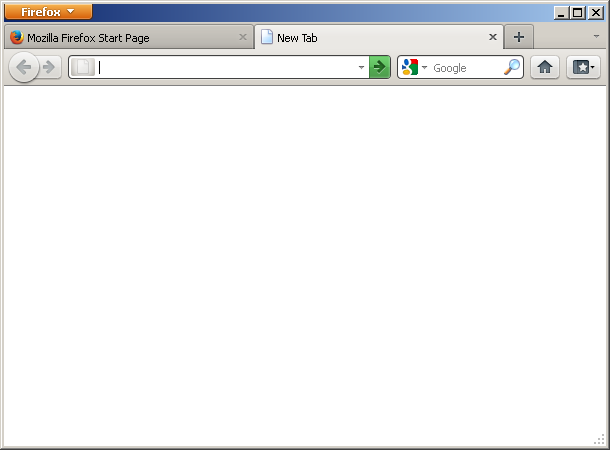

0.1

1.0
2.0
3.0

3.6.23

4.0

12.0

17.0
24.0

30.0
Versions of Mozilla Firefox, as requested by superwholocked-carcinogeneticist
Two versions used have add-ons installed (Adblock Plus and Personas.)
Once the rapid release cycle hit, I just selected a few versions from version 4 to 30. Those versions were 4, 12, 17, 24, and 30. I threw in a couple of operating systems other than Windows as well, since the UI looked similar from one release to the next.
Versions 17 and 24 were extended support releases, 30 is the current release, and 12 was the latest Windows 2000 (which I used for most of these) could run.
Version numbers are in the captions.